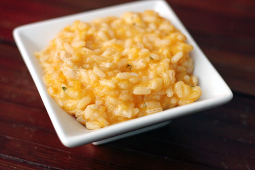
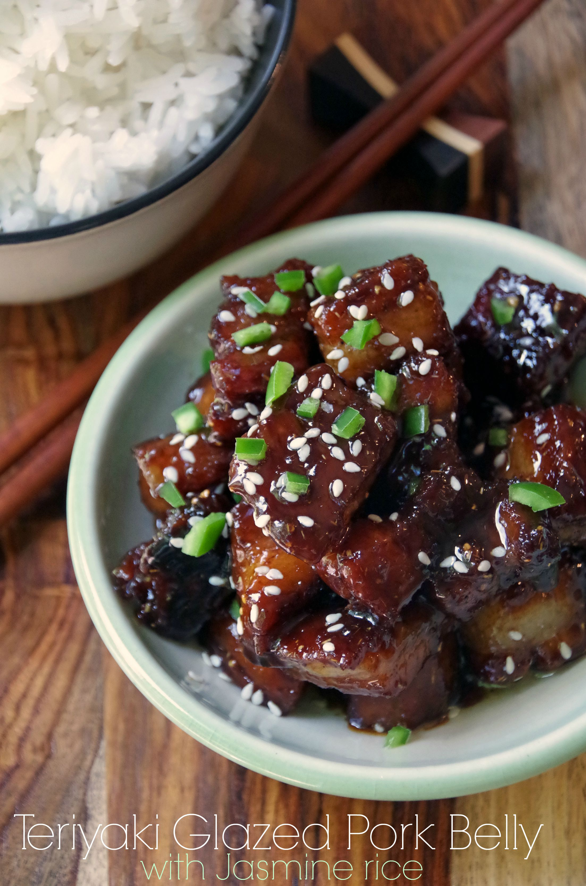
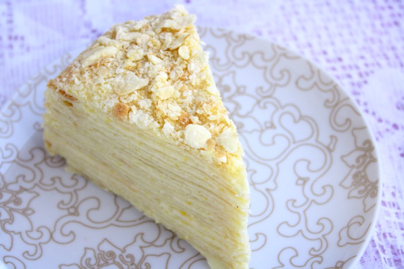

Here are some recipes I like, along with their ingredients.
|

Butternut Squash Risotto |

Teriyaki-Glazed Pork Belly w/ Coconut Rice |

Russian Napoleon Cake |
|---|---|---|
Ingredients:
|
Ingredients:
|
Ingredients:
|